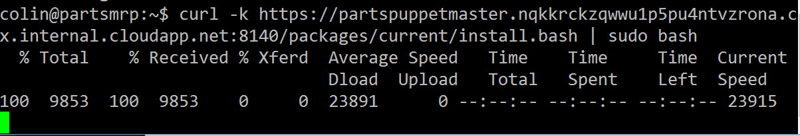

Continuous Deployment with Puppet
Deploying the Parts Unlimited MRP App via Puppet in Azure
In this hands-on lab, you will deploy a Java app, the Parts Unlimited MRP App, using Puppet from PuppetLabs. Puppet is a configuration management system that allows you to automate provisioning and configuration of machines by describing the state of your infrastructure as code. Infrastructure as Code is an important pillar of good DevOps.
Prerequisites
- An SSH client such as PuTTY
- An Azure subscription
Tasks
In this lab you will work with two machines: a Puppet Master machine and another machine known as a node which will host the MRP application. The only task you will perform on the node is to install the Puppet agent - the rest of the configuration will be applied by instructing Puppet how to configure the node though puppet programs on the Puppet Master.
- Provisioning a Puppet Master and node (both Ubuntu VMs) in Azure using ARM templates
- Install Puppet Agent on the node
- Configure the Puppet Production Environment
- Test the Production Environment Configuration
- Create a Puppet program to describe the environment for the MRP application
Task 1: Provision the Lab
-
Provision the Lab machines using an Azure Resource Manager (ARM) Template
This lab calls for the use of two machines. The Puppet Master server must be a Linux machine, but the puppet agent can run on Linux or Windows. For this lab, the node that we will be configuring is an Ubuntu VM.
Instead of manually creating the VMs in Azure, we are going to use an Azure Resource Management (ARM) template.
-
Click on the “Deploy to Azure” button
Simply click the Deploy to Azure button below and follow the wizard to deploy the two machines. You will need to log in to the Azure Portal.


The VMs will be deployed to a Resource Group along with a virtual network (VNET) and some other required resources. You can delete the resource group in order to remove all the created resources at any time.
-
Specify settings for the deployment
You will need to select a subscription and region to deploy the Resource Group to and to supply an admin username and password and unique name for both machines. The Puppet Master will be a Standard D2_V2 while the partsmrp machine will be a Standard A2.

Make sure you make a note of the region as well as the usernames and passwords for the machines. Allow about 10 minutes for deployment and then another 10 minutes for the Puppet Master to configure Puppet.
-
Check the Resource Group in the Azure Portal When the deployment completes, you should see the following resources in the Azure Portal:

Click on the “partspuppetmaster” Public IP Address. Then make a note of the DNS name:

The dnsaddress will be of the form machinename.region.cloudapp.azure.com. Open a browser to https://dnsaddress. (Make sure you’re going to http__s__, not http). You will be prompted about an invalid certificate - it is safe to ignore this for the purposes of this lab. If the Puppet configuration has succeeded, you should see the Puppet Console sign in page:

Note: The lab requires several ports to be open, such as the Puppet Server port, the Puppet console port, SSH ports and the Parts Unlimited MRP app port on the partsmrp machine. The ARM template opens these ports on the machines for you.
-
Log in to the Puppet Console
Now go back to the Puppet Console in your browser and enter the username
adminand the password you set. When you log in, you should see a page like this:
Task 3: Install Puppet Agent on the node
You are now ready to add the node to the Puppet Master. Once the node is added, the Puppet Master will be able to configure the node.
-
Get the Puppet Master internal DNS name Go to Nodes -> Unsigned Certificates. The page that loads will show a command that we need to run on the node. In the example below, the puppet master machine name is:
partspuppetmaster.nqkkrckzqwwu1p5pu4ntvzrona.cx.internal.cloudapp.net
-
Run the “Add Node” command on the node
Copy the “Add Node” command from the Puppet Console (the one that starts with
curl...) and go to the SSH terminal of the node. Run the command. The command will take a few moments to complete.
From here on, you will configure the node only from the Puppet Master, though you will use the partsmrp SSH terminal to manually force Puppet to configure it.
-
Accept the Pending Node Request
Return to the Puppet Console and refresh the Unsigned Certificates page (where you previously got the node install command). You should see a pending request. This request has come from the node and will authorize the certificate between the puppet master and the node so that they can communicate securely. Press “Accept” to approve the node:

Click on the “Nodes” tab in the Puppet Console to return to the nodes view. You should see 2 nodes listed: the puppet master and the partsmrp node (it may take a few minutes for the mrp node to finish configuration before it appears)

Note: It is possible to automate the install and configuration of the Puppet agent onto an Azure VM using the Puppet Agent extension from the Azure Marketplace.
Task 4: Configure the Puppet Production Environment
The Parts Unlimited MRP application is a Java application that requires mongodb and tomcat to be installed and configured on the partsmrp machine (the node). Instead of installing and configuring manually, we will now write a puppet program that will instruct the node how to configure itself.
Puppet Programs are stored in a particular folder in the puppet master. Puppet programs are made up of manifests that describe the desired state of the node(s). The manifests can consume modules, which are pre-packaged Puppet Programs. Users can create their own modules or consume modules from a marketplace maintained by PuppetLabs known as the Forge. Some modules on the Forge are official modules that are supported - others are open-source modules uploaded from the community.
Puppet Programs are organized by environment, allowing you to manage different catalogs for different environments such as dev, test and production.
For the purposes of this lab, we will treat the node as if it were in the production environment. We will also need to download a few modules from the Forge which we will consume to configure the node.
When the Puppet Server was installed in Azure, it configured a folder for managing the production environment
in /etc/puppetlabs/code/environments/production.
-
Inspect the Production modules On the SSH terminal to the Puppet Master, cd to that folder now:
sh cd /etc/puppetlabs/code/environments/productionIf you run
lsyou will see themanifestsandmodulesfolders. Themanifestsfolder contains descriptions of machines that we will later apply to nodes. Themodulesfolder contains any modules that are referenced within the manifests. -
Install additional Puppet Forge Modules We will now install some modules from the Puppet Forge that we will need to configure the
partsmrpnode. Run the following 3 commands:sh sudo puppet module install puppetlabs-mongodb sudo puppet module install puppetlabs-tomcat sudo puppet module install maestrodev-wget
Note: The
mongodbandtomcatmodules are supported modules from the Forge. Thewgetmodule is a user module and so is not officially supported. -
Create a Custom Module
We will now create a custom module that will configure the Parts Unlimited MRP app. Run the following commands to template a module:
sh cd /etc/puppetlabs/puppet/environments/production/modules sudo puppet module generate partsunlimited-mrpappThis will start a wizard that will ask a series of questions as it scaffolds the module. Simply press
enterfor each question (accepting blank or default) until the wizard completes.Running
ls -lashould list the modules available so far, includingmrpapp:
-
Configure the default node in the site.pp file
We are going to define the node’s configuration in the
mrpappmodule. The configuration of the nodes in the production environment is defined in asite.ppfile in the productionmanifestsfolder (the.ppextension is short for “puppet program”). Let’s edit thesite.ppfile and define the configuration for our node:sh sudo nano /etc/puppetlabs/code/environments/production/manifests/site.ppScroll to the bottom of the file and edit the
node defaultsection. Edit it to look as follows:puppet node default { class { 'mrpapp': } }Press
cntrl-X, thenythenenterto save the changes to the file.This instructs Puppet to configure the
default(that is, all nodes) with themrpappmodule. The module (though currently empty) is in themodulesfolder of the production environment, so Puppet will know where to find it.
Task 5: Test the Production Environment Configuration
Before we fully describe the MRP app for the node, let’s test that everything is hooked up correctly by
configuring a “dummy” file in the mrpapp module. If Puppet executes and creates the dummy file, then we can
flesh out the rest of the module properly.
-
Edit the init.pp file
Let’s edit the
init.ppfile of themrpappmodule (this is the entry point for the module):sh sudo nano /etc/puppetlabs/code/environments/production/modules/mrpapp/manifests/init.ppYou can either delete all the boiler-plate comments or just ignore them. Scroll down to the
class mrpappdeclaration and make it look as follows:puppet class mrpapp { file { '/tmp/dummy.txt': ensure => 'present', content => 'Puppet rules!', } }Press
cntrl-X, thenythenenterto save the changes to the file.Note: Classes in Puppet programs are not like classes in Object Oriented Programming. They simply define a “resource” that is conifgured on a node. In the
mrpappclass (or resource), we have just instructed Puppet to ensure that a file exists at the path/tmp/dummy.txtthat has the content “Puppet rules!”. We will define more advanced resources within themrpappclass as we progress. -
Test the dummy file
Let’s test our setup. Switch to the
partsmrpSSH terminal and enter the following command:sh sudo puppet agent --testBy default, the Puppet agents will query the Puppet Master for their configuration every 30 minutes. The command you just entered forces the agent to ask the Puppet Master for its configuration. It then tests itself against the configuration, and does whatever it needs to do in order to make itself match that configuration. In this case, the configuration requires the
/tmp/dummy.txtfile, so the node creates the file accordingly.You should see a successful run on the node.
catthe/tmp/dummy.txtfile to inspect its contents:sh cat /tmp/dummy.txt
-
Correct configuration drift
Puppet will automatically detect configuration drift and fix it. By default, the agent runs every 30 minutes on the nodes. Each time the agent runs, Puppet will determine if the environment is in the correct state - if it is not, it will reapply classes as necessary.
Let’s simulate configuration drift by deleting the dummy file and then re-running the puppet agent:
sh sudo rm /tmp/dummy.txt sudo puppet agent --test cat /tmp/dummy.txtYou should see the run complete successfully and the file should exist again.

You can also try to edit the contents of the file and re-run the
sudo puppet agent --testcommand to see the contents update.
Task 6: Create a Puppet Program to Describe the Prerequisites for the MRP Application
Now that we have hooked up the node (partsmrp) to the Puppet Master, we can begin to write the Puppet Program that will describe the prerequisites for the Parts Unlimited MRP application.
Note: For simplicity, we will describe the entire configuration in a single Puppet Program (init.pp from the mrpapp module we created earlier). However, the parts of the configuration could be split into multiple manifests or modules as they grow. This would promote reuse - just as in any good programming language.
Note: You can see the complete
init.ppfile here.
6.1 Configure MongoDb
Let’s add a class to configure mongodb. Once mongodb is configured, we want Puppet to donwload a mongo script that contains some data for our application’s database. We’ll include this as part of the mongodb setup.
On the Puppet Master, edit the init.pp file of the mrpapp module:
sh
sudo nano /etc/puppetlabs/puppet/environments/production/modules/mrpapp/manifests/init.pp
Add the following class at the bottom of the file:
class configuremongodb {
include wget
class { 'mongodb': }->
wget::fetch { 'mongorecords':
source => 'https://raw.githubusercontent.com/Microsoft/PartsUnlimitedMRP/master/deploy/MongoRecords.js',
destination => '/tmp/MongoRecords.js',
timeout => 0,
}->
exec { 'insertrecords':
command => 'mongo ordering /tmp/MongoRecords.js',
path => '/usr/bin:/usr/sbin',
unless => 'test -f /tmp/initcomplete'
}->
file { '/tmp/initcomplete':
ensure => 'present',
}
}
Let’s examine this class:
- Line 1: We create a class (resource) called configuremongodb
- Line 2: We include the wget module so that we can
download files via wget
- Line 3: We invoke the mondodb resource (from the mongodb module we downloaded earlier). This installs
mongodb using defaults defined in the Puppet mongodb module.
Believe it or not, that’s all we have to do to install mondodb!
- Line 5: We invoke the fetch resource from the wget module, calling this resource mongorecords
- Line 6: We set the source of the file we need to download
- Line 7: We set the destination where the file must be downloaded to
- Line 10: We use the built-in Puppet resource exec to execute a command
- Line 11: We specify the command to execute
- Line 12: We set the path for the command invocation
- Line 13: We specify a condition using the keyword unless: we only want this command to execute once, so we
create a tmp file once we have inserted the records (Line 15). If this file exists, we don’t execute the
command again.
Note: The
->notation on Lines 3, 9 and 14 is an “ordering arrow”: it tells Puppet that it must apply the “left” resource before invoking the “right” resource. This allows us to specify order when necessary.
Press cntrl-O, then enter to save the changes to the file without exiting.
6.2 Configure Java
Add the following class below the configuremongodb class:
class configurejava {
include apt
$packages = ['openjdk-8-jdk', 'openjdk-8-jre']
apt::ppa { 'ppa:openjdk-r/ppa': }->
package { $packages:
ensure => 'installed',
}
}
Let’s examine this class:
- Line 2: We include the apt module, which will allow us to configure new Personal Package Archives (PPAs)
- Line 3: We create an array of packages that we need to install
- Line 5: We add a PPA
- Lines 6 - 8: We tell Puppet to ensure that the package are installed. Puppet expands the array and essentially
does a for-each, installing each package in the array.
Note: We can’t use the Puppet
packagetarget to install Java since this will only install Java 7. That’s why we needed to add the PPA using theaptmodule.
Press cntrl-O, then enter to save the changes to the file without exiting.
6.3 Configure Tomcat
Let’s add a class below the configurejava class to configure tomcat:
class configuretomcat {
class { 'tomcat': }
tomcat::instance { 'default':
package_name => 'tomcat7',
install_from_source => false,
}->
tomcat::config::server::connector { 'tomcat7-http':
catalina_base => '/var/lib/tomcat7',
port => '9080',
protocol => 'HTTP/1.1',
connector_ensure => 'present',
server_config => '/etc/tomcat7/server.xml',
}->
tomcat::service { 'default':
use_jsvc => false,
use_init => true,
service_name => 'tomcat7',
}
}
Let’s examine this class:
- Line 1: We create a class (resource) called configuretomcat
- Line 2: We invoke the tomcat resource (from the tomcat module
we downloaded earlier)
- Line 4: We need to override some default properties for the tomcat instance. We specify the tomcat package we
need (Line 5) and tell the tomcat class not to install from source (Line 6).
- Lines 8 - 14: We configure the Tomcat service
- Lines 15 - 19: We need to configure a connector for the Parts Unlimited MRP application. In Lines 9 - 13, we specify
the connector properties for Puppet to write to the tomcat server.xml file.
Press cntrl-O, then enter to save the changes to the file without exiting.
6.4 Deploy a WAR File
The MRP application is compiled into a WAR file that Tomcat then uses to serve pages.
Let’s specify a resource to deploy the war file for the site. Go back to the Puppet SSH session and edit the init.pp file.
Add the following class at the bottom of the file:
class deploywar {
require configuretomcat
tomcat::war { 'mrp.war':
catalina_base => '/var/lib/tomcat7',
war_source => 'https://raw.githubusercontent.com/Microsoft/PartsUnlimitedMRP/master/builds/mrp.war',
}
}
Let’s examine this class:
- Line 1: We create a class (resource) called deploywar
- Line 2: We tell Puppet to make sure that configuretomcat is complete before invoking this class
- Line 5: We set the catalina base directory so that Puppet deploys the war to our Tomcat service
- Line 6: We use the tomcat module’s war resource to deploy our war from the war_source
6.5 Start the Ordering Service
The MRP service calls an Ordering Service, which is a REST API managing orders in the MongoDb. This service is compiled to a jar file. We’ll need to copy the jar file to our node and then run it in the background so that it can listen for requests.
Now we need to make sure that the ordering service is running. Again we’ll add a new class at the bottom of the init.pp file:
class orderingservice {
package { 'openjdk-7-jre':
ensure => 'installed',
}
file { '/opt/mrp':
ensure => 'directory'
}->
wget::fetch { 'orderingsvc':
source => 'https://raw.githubusercontent.com/Microsoft/PartsUnlimitedMRP/master/builds/ordering-service-0.1.0.jar',
destination => '/opt/mrp/ordering-service.jar',
cache_dir => '/var/cache/wget',
timeout => 0,
}->
exec { 'stoporderingservice':
command => "pkill -f ordering-service",
path => '/bin:/usr/bin:/usr/sbin',
onlyif => "pgrep -f ordering-service"
}->
exec { 'stoptomcat':
command => 'service tomcat7 stop',
path => '/usr/bin:/usr/sbin',
onlyif => "test -f /etc/init.d/tomcat7",
}->
exec { 'orderservice':
command => 'java -jar /opt/mrp/ordering-service.jar &',
path => '/usr/bin:/usr/sbin:/usr/lib/jvm/java-8-openjdk-amd64/bin',
}->
exec { 'wait':
command => 'sleep 20',
path => '/bin',
notify => Tomcat::Service['default']
}
}
Let’s examine this class:
- Line 1: We create a class (resource) called orderingservice
- Lines 2 - 4: We install the Java JRE required to run the application using Puppet’s package resource
- Lines 6 - 8: We ensure that the directory /opt/mrp exists (Puppet creates it if it doesnt)
- Lines 9 - 14: We wget the ordering service binary, placing it in /opt/mrp
- Line 12: We specify a cache directory to ensure that the file is only downloaded once
- Lines 15 - 19: We stop the orderingservice, but only if it is running
- Lines 20 - 24: We stop the tomcat7 service, but only if it is running
- Lines 25 - 28: We start the ordering service
- Lines 29 - 33: We sleep for 20 seconds to give the ordering service time to start up before notifying
the tomcat service, which triggers a refresh on the service - Puppet will re-apply the state we defined
for the service (i.e. start it if it is not running)
Note: We need to wait after running the
javacommand since this service needs to be running before we start Tomcat, otherwise Tomcat grabs the port that the ordering service needs to listen on.
6.6 Complete the mrpapp Resource
Go back to the top of the file and change the mrpapp class to look as follows to run all our resources:
class mrpapp {
class { 'configuremongodb': }
class { 'configurejava': }
class { 'configuretomcat': }
class { 'deploywar': }
class { 'orderingservice': }
}
Press cntrl-O, then enter to save the changes to the file without exiting.
Task 7: Run the Puppet Configuration on the Node
-
Run the Puppet Agent On the partsmrp SSH session, again force Puppet to update the node’s configuration:
sh sudo puppet agent --testThis first run will take a few moments - there is lots to download and install for the first run! Next time the Puppet agent runs, it will verify that the existing environment is correctly configured - that should be much quicker since the services will already be installed and configured.
-
Verify that Tomcat is running
Open a browser and browse to port
9080of the partsmrp machine. You can get the name of the machine by clicking on the Public IP resource for the machine in Azure (just like you did to get the url of the puppet master earlier). Once you open the browser, you should see the following Tomcat confirmation page:
-
Verify that the PartsMRP Application is running correctly
Now you can ensure that the configuration is correct by opening a browser to the Parts Unlimited MRP application. The address will be http://partsmrp-public-ip:9080/mrp where partsmrp-public-ip is the public ip or DNS name of the partsmrp VM (you can get it by clicking on the VM in the resource group in the Azure Portal).

If you click on the Orders button, you should see the orders page:

Note: You can see the complete
init.ppfile here.
In this lab, you learned how to create the Puppet infrastructure and deploy the Parts Unlimited MRP app to the nodes while managing configuration drift.